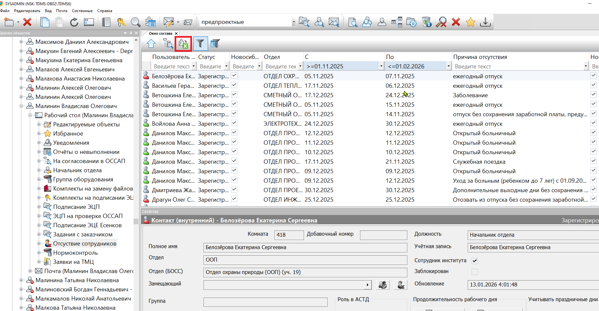
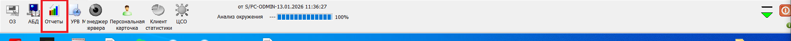

📤 Выгрузка отпусков и графиков работы
📥 Выгрузка отпусков из ТДМС
Для получения выгрузки отпусков необходимо выполнить следующие действия:
-
Откройте выборку "Отсутствие сотрудников" в ТДМС на Рабочем столе Малинина Владислава
-
Выставьте фильтры "С" и "По" - даты берутся за запасом в 1 месяц до и после дат необходимой выгрузки

Рисунок: Настройка фильтров для выгрузки отпусков
-
Нажмите кнопку "Экспорт в Excel" для сохранения данных в файл Excel
📅 Выгрузка графика работы из СКУД
Для получения выгрузки графика работы необходимо выполнить следующие действия:
-
В СКУД нажмите кнопку "Отчеты"

Рисунок: Кнопка Отчеты в СКУД
-
Выберите отчет "Графики работы сотрудников"

Рисунок: Выбор отчета Графики работы сотрудников
-
Нажмите "Документ Excel (XML)"

Рисунок: Экспорт графика работы в Excel
🎯 Общее описание
Надстройка СКУД позволяет автоматически проставлять причины отсутствия сотрудников и графики их работы
на основе данных из внешних файлов Excel.
📋 Форматы файлов
Формат файла отпусков
Важно! Файл с отпусками должен иметь следующую структуру:
| Колонка |
Содержимое |
Описание |
| A |
ФИО сотрудника |
Полное имя сотрудника (должно совпадать с данными в файле СКУД) |
| E |
Дата начала отпуска |
Дата начала периода отпуска |
| F |
Дата окончания отпуска |
Дата окончания периода отпуска |
| G |
Причина отсутствия |
Текст причины отсутствия, который будет проставлен в файле СКУД |
Формат файла графиков работы
Важно! Файл с графиками работы должен иметь следующую структуру:
| Колонка |
Содержимое |
Описание |
| C |
ФИО сотрудника |
Полное имя сотрудника (начиная со строки 7, должно совпадать с данными в файле СКУД) |
| F |
График работы |
График работы сотрудника (начиная со строки 7) |
Примечание: Данные начинаются с 7-й строки файла. Первые 6 строк могут содержать заголовки или другую служебную информацию.
🆘 Поддержка
При возникновении проблем или вопросов обращайтесь к разработчику.
Разработчик: Малинин Владислав
e-mail: vladmalinin93@gmail.com
Телефон: +7 (951) 187-67-10